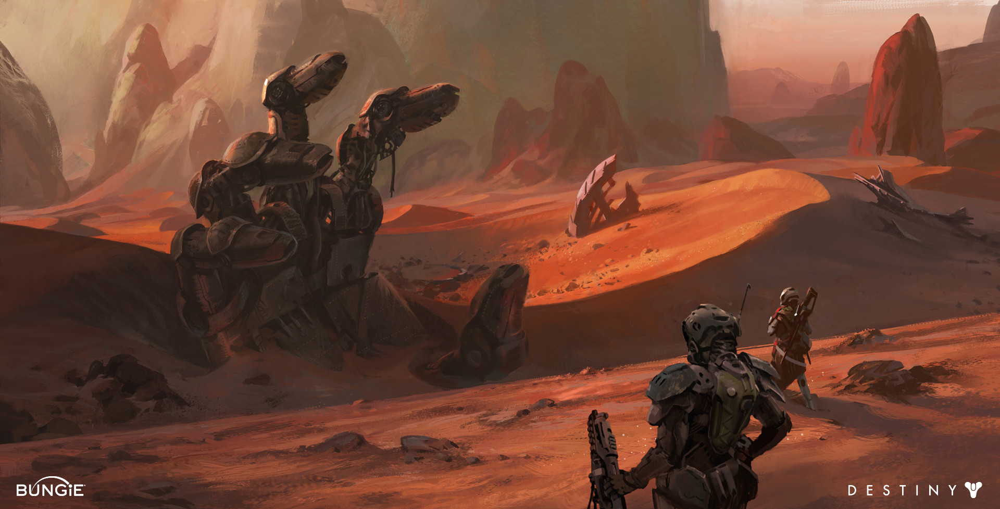

Mars
Previously known as Project Catamaran, Ares One was a mission to make contact with the Traveler on Mars. The project began in response to the sudden and unexpected arrival of the Traveler. As the Traveler moved throughout the solar system to terraform Jupiter’s moons, Mercury, and Venus, humanity began to worry about where “Moon X” would appear next. When the scientist Evie Calumet determined a way to predict the Traveler’s movements a multinational crew was organized to intercept it on Mars. This crew consisted of Jacob Hardy, Evie Calumet, Ulysses Qiao, and M. Mihaylova. Qiao served as navigator, Hardy as the pilot, and Mihaylova as constructor of the ship’s AI; Evie was a theoretical physicist that also had some environmental knowledge. While a part of the Project Catamaran, Mihaylova developed an artificial intelligence that she codenamed “R.” This AI is heavily implied to be Rasputin. Evie began requesting access to R’s entire code, something that Mihaylova refused to give in fear that Evie would discover R’s rapid advancements.6 Qiao, who had his own access codes to R, gave them to Evie in an attempt to solve the conflict. Three days before the launch of Ares One, Evie went to Mihaylova with the data she discovered, concerned about R’s assessments of the crew members. Evie died the day of the launch due to an accident involving an electrical fire, weak sprinkler, and wet staircase.5 Her death may not have been an accident, as Mihaylova had mentioned that disaster may occur should Evie learn R’s true nature. The launch date was pushed back by one day, and the project was renamed Ares One; additionally, the crew members were armed. The mission continued, however, and Qiao, Hardy, and Mihaylova all traveled to Mars to successfully make contact with the Traveler. Ares One’s contact with the Traveler marked the beginning of humanity’s Golden Age, which was characterized by rapid scientific advancement as well as an increase in human lifespan. Jacob Hardy went on to become a mathematician studying the nature of Light.
